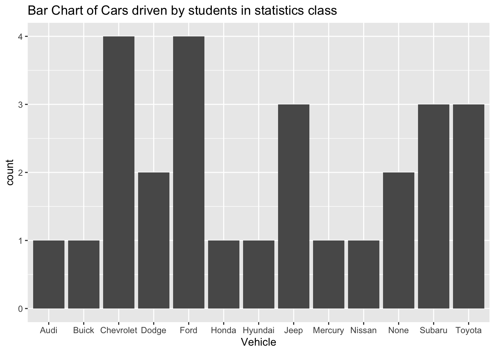
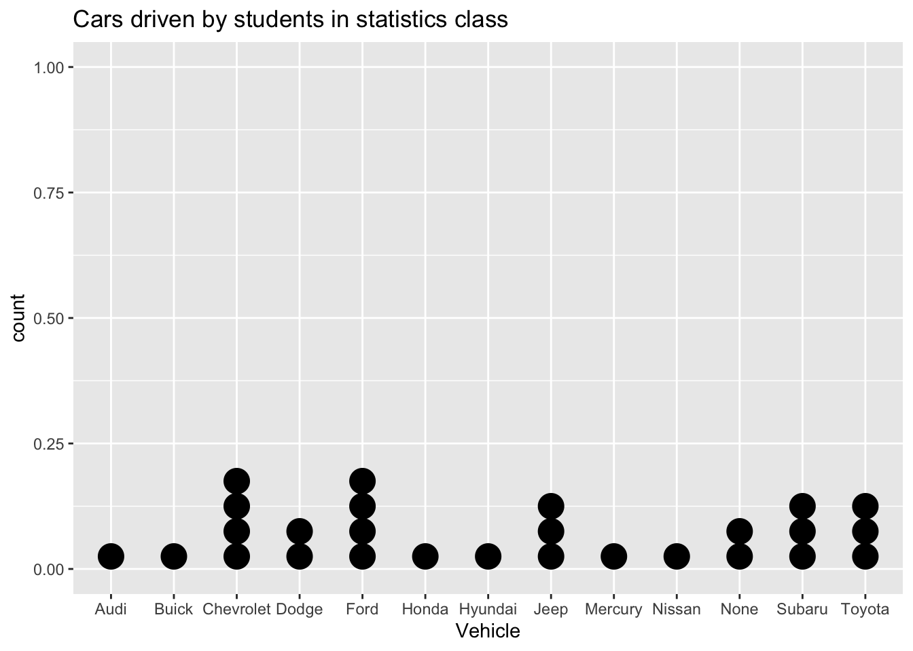
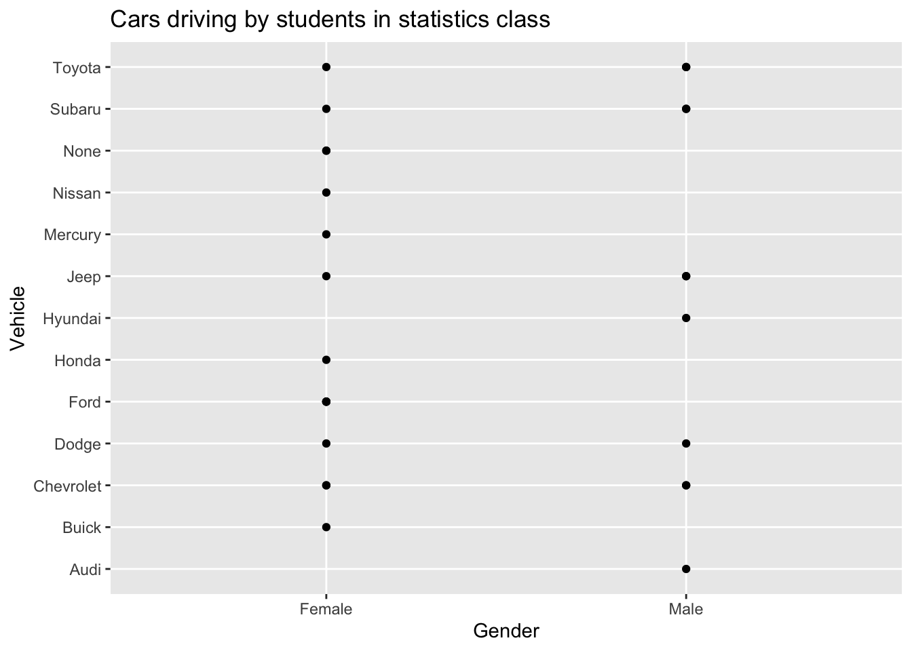
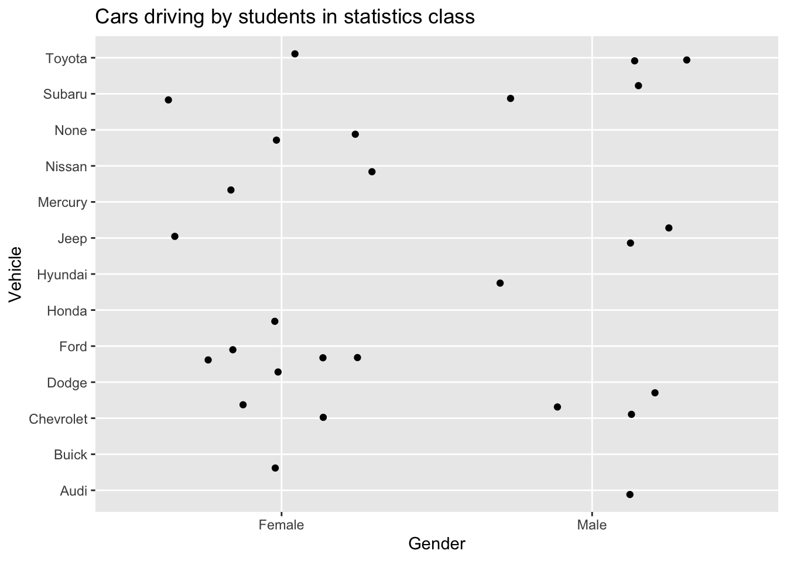
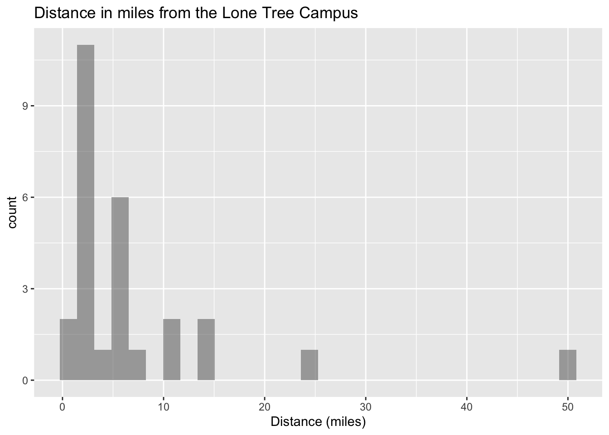
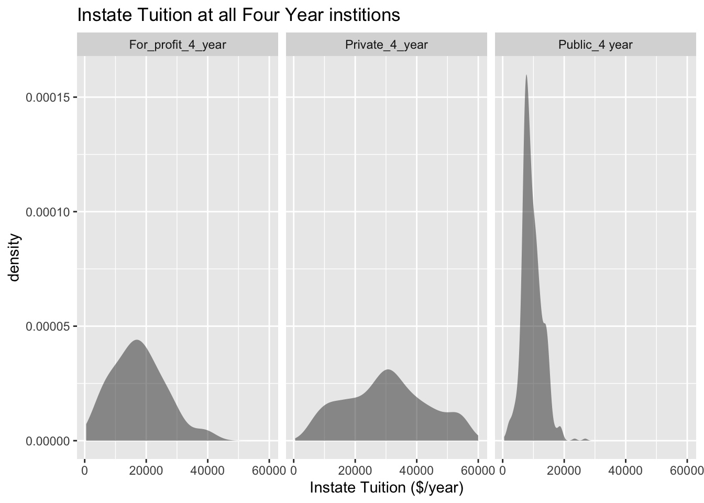
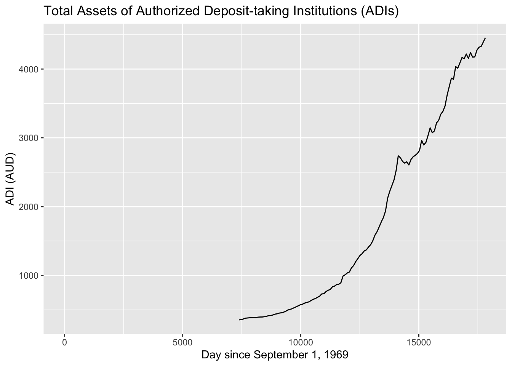

In chapter 1, you were introduced to the concepts of population, which again is a collection of all the measurements from the individuals of interest. Remember, in most cases you can’t collect the entire population, so you have to take a sample. Thus, you collect data either through a sample or a census. Now you have a large number of data values. What can you do with them? No one likes to look at just a set of numbers. One thing is to organize the data into a table or graph. Ultimately though, you want to be able to use that graph to interpret the data, to describe the distribution of the data set, and to explore different characteristics of the data. The characteristics that will be discussed in this chapter and the next chapter are:
Center: middle of the data set, also known as the average.
Variation: how much the data varies.
Distribution: shape of the data (symmetric, uniform, or skewed).
Qualitative data: analysis of the data
Outliers: data values that are far from the majority of the data.
Time: changing characteristics of the data over time.
This chapter will focus mostly on using the graphs to understand aspects of the data, and not as much on how to create the graphs. There is technology that will create most of the graphs, though it is important for you to understand the basics of how to create them.
This textbook uses RStudio to perform all graphical and descriptive statistics, and all statistical inference. When using RStudio, every command is performed the same way. You start off with a goal(explanatory variable ~ response variable, data=data frame_name,…)
RStudio uses packages to make calculations easier. For this textbook, you will mostly need the package mosaic. There will be others that you will need on occasion, but you will be told that at the time. Most likely, mosaic is already installed in your RStudio. If you wish to install other packages you use the command
install.packages(“name of package”)
where you replace the name of package with the package you wish to install.
Once the package is installed, then you will need to tell RStudio you want to use it every time you start RStudio. The command to tell RStudio you want to use a package is
library(“name of package”)
You will need to turn on the package mosaic. The NHANES package contains a data frame that is useful. Both are accessed by running the command library(“name of package”).
As an example if you want to create a density plot of cholesterol levels on day 2 from a data frame called Cholesterol, then your command would be
gf_density(~day2, data=Cholesterol)
You will see more on what the different commands are that you would use. A word about the … at the end of the command. That means there are other things you can do, but that is up to you if you want to actually do them. They do not need to be used if you don’t want to. The following sections will show you how to create the different graphs that are usually completed in an introductory statistics course.
3.1 Qualitative Data
Remember, qualitative data are words describing a characteristic of the individual. There are several different graphs that are used for qualitative data. These graphs include bar graphs, Pareto charts, and pie charts. Bar graphs can be created using a statistical program like RStudio.
Bar graphs or charts consist of the frequencies on one axis and the categories on the other axis. Drawing the bar graph using r is performed using the following command.
gf_bar(~explanatory variable, data=Dataframe)
3.1.1 Example: Drawing a Bar Chart
Data was collected for two semesters in a statistics class. The data frame is in Table 3.1. The command
head(data frame)
shows the variables and the first few lines of the data set. The data sets are usually larger than what is shown. The head command allows one to see the structure of the data frame.
Every data frame has a code book that describes the data set, the source of the data set, and a listing and description of the variables in the data frame.
Code book for data frame class
Description Survey results from two semesters of statistics classes at Coconino Community College in the years 2018-2019.
Format
This data frame contains the following columns:
vehicle: Type of car a student drives
gender: Self declared gender of a student
distance_campus: how far a student lives from the Lone Tree Campus of Coconino Community College (miles)
ice_cream: favorite ice cream flavor
rent: How much a student pays in rent
major: Students declared major
height: height of the student (inches)
winter: Student’s opinion of winter (Love it, Like it, Don’t like, No opinion)
Source
Kozak K (2019). Survey results form surveys collected in statistics class at Coconino Community College.
References
Kozak, 2019
Create a bar graph of vehicle type. To do this in RStudio, use the command
gf_bar(~variable, data=Data_Frame, …)
where gf_bar is the goal, vehicle is the name of the response variable (there is no explanatory variable), the data frame is Class, and a title was added to the graph.
3.1.1.1 Solution
gf_bar(~vehicle, data=Class, title="Bar Chart of Cars driven by students in statistics class", xlab="Vehicle")

Figure 3.1: Cars driven by students in statistics class
Description of Figure 3.1 is a Bar graph with bars for Audi, Buick, Honda, Hyundai, Mercury, Nissan with height of 1, Dodge and None with height of 2, Jeep, Subaru, Toyota with heights of 3, and Chevrolet and Ford at height of 4.
Notice from Figure 3.1, you can see that Chevrolet and Ford are the more popular car, with Jeep, Subaru, and Toyota not far behind. Many types seems to be the lesser used, and tied for last place. However, more data would help to figure this out.
All graphs should have labels on each axis and a title for the graph.
The beauty of data frames with multiple variables is that you can answer many questions from the data. Suppose you want to see if gender makes a difference for the type of car a person drives. If you are a car manufacturer, if you knew that certain genders like certain cars, then you would advertise to the different genders. To create a bar graph that separates based on gender, perform the following command in RStudio.
gf_bar(~vehicle, fill=~gender, data=Class, title="Cars driving by students in statistics class",xlab="Vehicle", position=position_dodge())
Figure 3.2: Bar graph of Cars driven by students in statistics class
Description of Figure 3.2 is a bar graph of number of vehicles separated by female and male. Audi and male has height of 1, Buick and female has a height of 1, Chevrolet and male and Chevrolet and female have heights of 2, Dodge and male and Dodge and female has heights of 1, Ford and female has a height of 4, Honda and female has a height of 1, Hyundai and male has a height of 1, Jeep and male has a height of 2 while Jeep and female has a height of 1, Mercury and female has a height of 1, Nissan and female has a height of 1, no car and female has a height of 2, Subaru and female has a height of 1, Subaru and male has a height of 2, Toyota and female has a height of 1, and Toyota and male has a height of 2.
Notice a Ford is driven by females more than any other car, while Chevrolet, Mercury, and Subaru cars are equally driven by males. Obviously a larger sample would be needed to make any conclusions from this data.
There are other types of graphs that can be created for quantitative variables. Another type is known as a dot plot. The command for this graph is as follows.
gf_dotplot(~vehicle, data=Class, title="Cars driven by students in statistics class", xlab="Vehicle")

Figure 3.3: Cars driven by students in statistics class
Description of Figure 3.8 is a dot plot of number of vehicles with Audi, Buick, Honda, Hyundai, Mercury, Nissan with height of 1, Dodge and None with height of 2, Jeep, Subaru, Toyota with heights of 3, and Chevrolet and Ford at height of 4. Very similar to bar graph.
Notice a dot plot is like a bar chart. Both give you the same information. You can also divide a dot plot by gender.
Another type of graph that is also useful and similar to the dot plot is a point plot (scatter plot). In this plot you can graph the explanatory variable versus the response variable. The command for this in rStudio is as follows.
gf_point(vehicle~gender, data=Class, title="Cars driving by students in statistics class", xlab="Gender", ylab="Vehicle")

Figure 3.4: Cars driven by students in statistics class
Description of Figure 3.4 is a scatter plot of type of vehicles separated by female and male with females owning Toyota, Subaru, none, Nissan, Mercury, Jeep, Honda, Ford, Dodge, Chevrolet, and Buick, while males own Toyota, Subaru, Jeep, Hyundai, Dodge, Chevrolet, and Audi.
The problem with Figure 3.4 is that if there are multiple females who drive a Ford, only one dot is shown. So it is best to spread the dots out using a plot known as a jitter plot. In a jitter plot the dots are randomly moved off the center line. The command for a jitter plot is as follows:
gf_jitter(vehicle~gender, data=Class, title="Cars driving by students in statistics class", xlab="Gender", ylab="Vehicle")

Figure 3.5: Cars driven by students in statistics class
Description of Figure 3.5 is a jitter plot of number of vehicles separated by female and male with females owning 1 Toyota, 1 Subaru, 2 with none, 1 Nissan, 1 Mercury, 1 Jeep, 1 Honda, 4 Fords, 1 Dodge, 2 Chevrolets, and 1 Buick, while males own 2 Toyotas, 2 Subarus, 2 Jeeps, 1 Hyundai, 1 Dodge, 1 Chevrolets, and 1 Audi.
Now you can observe that there are 4 females who drive a Ford. There is one female who drives a Honda. Other information about other cars and genders can be seen better than in the point plot and the bar graph. Jitter plots are useful to see how many data values are for each qualitative data values.
There are many other types of graphs that can be used on qualitative data. There are spreadsheet software packages that will create most of them, and it is better to look at them to see how to create then. It depends on your data as to which may be useful, but the bar, dot, and jitter plots are really the most useful.
3.1.2 Homework for Qualitative Data Section
Eyeglassomatic manufactures eyeglasses for different retailers. The number of lenses for different activities is in Table 3.2.
Description Activities that an Eyeglass company performs when making eyeglasses, Grind means ground the lenses and put them in frames, multicoat means put tinting or coatings on lenses and then put them in frames, assemble means received frames and lenses from other sources and put them together, make frames means made the frames and put lenses in from other sources, receive finished means received glasses from other source unknown means do not know where the lenses came from.
Format
This data frame contains the following columns:
activity: The activity that is completed to make the eyeglasses by Eyeglassomatic
Source John Matic provided the data from a company he worked with. The company’s name is fictitious, but the data is from an actual company.
References John Matic (2013)
Make a bar chart of this data. State any findings you can see from the graph.
Data was collected for two semesters in a statistics class drive. The data frame is in Table 3.1.
Code book for the Data Frame Class is found below Table 3.1.
Create a bar graph of the variable ice cream. State any findings you can see from the graphs.
The number of deaths in the US due to carbon monoxide (CO) poisoning from generators from the years 1999 to 2011 are in Table 3.3 (Hinatov, 2012). Create a bar chart of this data. State any findings you see from the graph.
Data was collected for two semesters in a statistics class drive. The data frame is in Table 3.1. Create a bar graph and dot plot of the variable major. Create a jitter plot of major and gender. State any findings you can see from the graphs.
Code book for the Data Frame Class is found below Table 3.1.
Eyeglassomatic manufactures eyeglasses for different retailers. They test to see how many defective lenses they made during the time period of January 1 to March 31. The table Table 3.4 gives the defect and the number of defects. Create a bar chart of the data and then describe what this tells you about what causes the most defects.
Description Types of defects that an Eyeglass company sees in the lenses they make into eyeglasses.
Format
This data frame contains the following columns:
type: The type of defect that is Seen when making eyeglasses by Eyeglassomatic
Source John Matic provided the data from a company he worked with. The company’s name is fictitious, but the data is from an actual company.
References John Matic (2013)
American National Health and Nutrition Examination (NHANES) surveys is collected every year by the US National Center for Health Statistics (NCHS). The data frame is in Table 3.5. Create a bar chart of MartialStatus. Create a jitter plot of MaritalStatus versus Education. Describe any findings from the graphs.
knitr::kable(head(NHANES))
Table 3.5: NHANES Data frame
ID
SurveyYr
Gender
Age
AgeDecade
AgeMonths
Race1
Race3
Education
MaritalStatus
HHIncome
HHIncomeMid
Poverty
HomeRooms
HomeOwn
Work
Weight
Length
HeadCirc
Height
BMI
BMICatUnder20yrs
BMI_WHO
Pulse
BPSysAve
BPDiaAve
BPSys1
BPDia1
BPSys2
BPDia2
BPSys3
BPDia3
Testosterone
DirectChol
TotChol
UrineVol1
UrineFlow1
UrineVol2
UrineFlow2
Diabetes
DiabetesAge
HealthGen
DaysPhysHlthBad
DaysMentHlthBad
LittleInterest
Depressed
nPregnancies
nBabies
Age1stBaby
SleepHrsNight
SleepTrouble
PhysActive
PhysActiveDays
TVHrsDay
CompHrsDay
TVHrsDayChild
CompHrsDayChild
Alcohol12PlusYr
AlcoholDay
AlcoholYear
SmokeNow
Smoke100
Smoke100n
SmokeAge
Marijuana
AgeFirstMarij
RegularMarij
AgeRegMarij
HardDrugs
SexEver
SexAge
SexNumPartnLife
SexNumPartYear
SameSex
SexOrientation
PregnantNow
51624
2009_10
male
34
30-39
409
White
NA
High School
Married
25000-34999
30000
1.36
6
Own
NotWorking
87.4
NA
NA
164.7
32.22
NA
30.0_plus
70
113
85
114
88
114
88
112
82
NA
1.29
3.49
352
NA
NA
NA
No
NA
Good
0
15
Most
Several
NA
NA
NA
4
Yes
No
NA
NA
NA
NA
NA
Yes
NA
0
No
Yes
Smoker
18
Yes
17
No
NA
Yes
Yes
16
8
1
No
Heterosexual
NA
51624
2009_10
male
34
30-39
409
White
NA
High School
Married
25000-34999
30000
1.36
6
Own
NotWorking
87.4
NA
NA
164.7
32.22
NA
30.0_plus
70
113
85
114
88
114
88
112
82
NA
1.29
3.49
352
NA
NA
NA
No
NA
Good
0
15
Most
Several
NA
NA
NA
4
Yes
No
NA
NA
NA
NA
NA
Yes
NA
0
No
Yes
Smoker
18
Yes
17
No
NA
Yes
Yes
16
8
1
No
Heterosexual
NA
51624
2009_10
male
34
30-39
409
White
NA
High School
Married
25000-34999
30000
1.36
6
Own
NotWorking
87.4
NA
NA
164.7
32.22
NA
30.0_plus
70
113
85
114
88
114
88
112
82
NA
1.29
3.49
352
NA
NA
NA
No
NA
Good
0
15
Most
Several
NA
NA
NA
4
Yes
No
NA
NA
NA
NA
NA
Yes
NA
0
No
Yes
Smoker
18
Yes
17
No
NA
Yes
Yes
16
8
1
No
Heterosexual
NA
51625
2009_10
male
4
0-9
49
Other
NA
NA
NA
20000-24999
22500
1.07
9
Own
NA
17.0
NA
NA
105.4
15.30
NA
12.0_18.5
NA
NA
NA
NA
NA
NA
NA
NA
NA
NA
NA
NA
NA
NA
NA
NA
No
NA
NA
NA
NA
NA
NA
NA
NA
NA
NA
NA
NA
NA
NA
NA
4
1
NA
NA
NA
NA
NA
NA
NA
NA
NA
NA
NA
NA
NA
NA
NA
NA
NA
NA
NA
51630
2009_10
female
49
40-49
596
White
NA
Some College
LivePartner
35000-44999
40000
1.91
5
Rent
NotWorking
86.7
NA
NA
168.4
30.57
NA
30.0_plus
86
112
75
118
82
108
74
116
76
NA
1.16
6.70
77
0.094
NA
NA
No
NA
Good
0
10
Several
Several
2
2
27
8
Yes
No
NA
NA
NA
NA
NA
Yes
2
20
Yes
Yes
Smoker
38
Yes
18
No
NA
Yes
Yes
12
10
1
Yes
Heterosexual
NA
51638
2009_10
male
9
0-9
115
White
NA
NA
NA
75000-99999
87500
1.84
6
Rent
NA
29.8
NA
NA
133.1
16.82
NA
12.0_18.5
82
86
47
84
50
84
50
88
44
NA
1.34
4.86
123
1.538
NA
NA
No
NA
NA
NA
NA
NA
NA
NA
NA
NA
NA
NA
NA
NA
NA
NA
5
0
NA
NA
NA
NA
NA
NA
NA
NA
NA
NA
NA
NA
NA
NA
NA
NA
NA
NA
NA
To view the code book for NHANES, type help(“NHANES”) in rStudio after you load the NHANES packages using library(“NHANES”)
3.2 Quantitative Data
There are several different graphs for quantitative data. With quantitative data, you can talk about how the data is distributed, called a distribution. The shape of the distribution can be described from the graphs.
Histogram: a graph of frequencies (counts) on the vertical axis and classes on the horizontal axis. The height of the rectangles is the frequency and the width is the class width. The width depends on how many classes (bins) are in the histogram. The shape of a histogram is dependent on the number of bins. In RStudio the command to create a histogram is
gf_histogram(~response variable, data=Data_Frame, title=“title of the graph”)
The last part of the command puts a title on the graph. You type in what ever you want for the title in the quotes.
Density Plot: Similar to a histogram, except smoothing is created to smooth out the graph. The shape is not dependent on the number of bins so the distribution is easier to determine from the density plot. In RStudio the command to create a density plot is
gf_density(~response variable, data=Data_Frame, title=“title of the graph”, xlab=“Label”, ylab=“Label”)
The last part of the command puts a title on the graph and labels on the axes. You type in what every you want for the title and labels in the quotes.
The last part of the command puts a title on the graph and labels on the axes. You type in what every you want for the title and labels in the quotes.
3.2.1 Example: Drawing a Histogram and Density plot
Data was collected for two semesters in a statistics class drive. The data frame is in Table 3.1 and the code book is below the data frame
Draw a histogram, density plot, and a dot plot for the variable the distance a student lives from the Lone Tree Campus of Coconino Community College. Describe the story the graphs tell.
3.2.1.1Solution
gf_histogram(~distance_campus, data=Class, title="Distance in miles from the Lone Tree Campus", xlab="Distance (miles)")

Figure 3.6: Distance in miles from the Lone Tree Campus
Description of the graph is histogram with high part on left and low part on right with several gaps. The graph contains bars.
gf_density(~distance_campus, data=Class, title="Distance in miles from the Lone Tree Campus", xlab="Distance (miles)")
Figure 3.7: Distance in miles from the Lone Tree Campus
Description of the graph is density graph with high part on left and low part on right with several gaps. The graph is smooth.
gf_dotplot(~distance_campus, data=Class, title="Distance in miles from the Lone Tree Campus", xlab="Distance (miles)")
Figure 3.8: Distance in miles from the Lone Tree Campus
Description of the graph of dot plot with high part on left and low part on right with several gaps. The graph is with dots that represent each data value.
Notice the histogram, density plot, and dot plot are all very similar, but the density plot is smoother. They all tell you similar ideas of the shape of the distribution. Reviewing the graphs you can see that most of the students live within 10 miles of the Lone Tree Campus, in fact most live within 5 miles from the campus. However, there is a student who lives around 50 miles from the Lone Tree Campus. This is a great deal farther from the rest of the data. This value could be considered an outlier. An outlier is a data value that is far from the rest of the values. It may be an unusual value or a mistake. It is a data value that should be investigated. In this case, the student lived really far from campus, thus the value is not a mistake, and is just very unusual. The density plot is probably the best plot for most data frames.
There are other aspects that can be discussed, but first some other concepts need to be introduced.
3.2.2 Shapes of the distribution:
When you look at a distribution, look at the basic shape. There are some basic shapes that are seen in histograms. Realize though that some distributions have no shape. The common shapes are symmetric, skewed, and uniform. Another interest is how many peaks a graph may have. This is known as modal.
Symmetric means that you can fold the graph in half down the middle and the two sides will line up. You can think of the two sides as being mirror images of each other. Skewed means one “tail” of the graph is longer than the other. The graph is skewed in the direction of the longer tail (backwards from what you would expect). A uniform graph has all the bars the same height.
Modal refers to the number of peaks. Unimodal has one peak and bimodal has two peaks. Usually if a graph has more than two peaks, the modal information is not longer of interest.
Other important features to consider are gaps between bars, a repetitive pattern, how spread out is the data, and where the center of the graph is.
3.2.3 Examples of graphs:
This graph is roughly symmetric and unimodal:
Graph: Symmetric Distribution
symmetric Graph
This graph is symmetric and bimodal:
Graph: Symmetric and Bimodal Distribution
Bimodal and symmetric graph
This graph is skewed to the right:
Graph: Skewed Right Distribution
Skewed right graph
This graph is skewed to the left and has a gap:
Graph: Skewed Left Distribution
Skewed Left graph
This graph is uniform since all the bars are the same height:
Graph: Uniform Distribution
Uniform graph
3.2.4 Example: Drawing a Histogram and Density plot
Data was collected from the Chronicle of Higher Education for tuition from public four year colleges, private four year colleges, and for profit four year colleges. The data frame is in Table 3.6. Draw a density plot of instate tuition levels for all four year institutions, and then separate the density plot for instate tuition based on type of institution. Describe any findings from the graph.
Alabama Agricultural and Mechanical UniversityPublic 4-year
Public_4 year
AL
8379
9698
18077
17918
26297
Code book for Data Frame Tuition
Description Cost of four year institutions.
Format
This data frame contains the following columns:
INSTITUTION: Name of four year institution
TYPE: Type of four year institution, Public_4_year, Private_4_year, For_profit_4_year.
STATE: What state the institution resides
ROOM_BOARD: The cost of room and board at the institution (\$)
INSTATE_TUTION: The cost of instate tuition (\$)
INSTATE_TOTAL: The cost of room and board and instate tuition (\$ per year)
OUTOFSTATE_TUTION: The cost of out of state tuition (\$ per year)
OUTOFSTATE_TOTAL: The cost of room and board and out of state tuition (\$ per year)
Source Tuition and Fees, 1998-99 Through 2018-19. (2018, December 31). Retrieved from https://www.chronicle.com/interactives/tuition-and-fees
References Chronicle of Higher Education *, December 31, 2018.
3.2.4.1Solution
gf_density(~INSTATE_TUITION, data=Tuition, title="Instate Tuition at all Four Year institutions", xlab="Instate Tutition ($ per year)")
Density Plot for Instate Tuition Levels at all Four-Year Colleges
Description of the graph is a density with high part on left, then a dip and up to peak in the middle that is lower than the left peak and then the lowest peak on the right .
(ref:tuition-instate-type-cap) Density Plot for Instate Tuition Levels at all Four-Year Colleges
gf_density(~INSTATE_TUITION|TYPE, data=Tuition, title="Instate Tuition at all Four Year institions", xlab="Instate Tuition ($/year)")

Figure 3.9: Instate Tuition at all Four Year institions
Description of Figure 3.9 is a density plots separated by for profit 4 year with peak on left, private 4 year with peak in the middle, and public 4 year colleges with peak on the left. Public 4 year has the highest peak, with for profit 4 year is lower, and then private 4 year with the lowest peak.
The distribution is skewed right, with no gaps. Most institutions in state is less than \$ 20,000 per year though some go as high as \$ 60,000 per year. When separated by public versus private and for profit, most public are much less than \$ 20,000 per year while private four year cost around \$ 30,000 per year, and for profit are around \$ 20,000 per year.
There are other types of graphs for quantitative data. They will be explored in the next section.
3.2.5 Homework for Quantitative Data Section
The weekly median incomes of males and females for specific occupations, are given in Table 3.7 (CPS News Releases. (n.d.). Retrieved July 8, 2019, from https://www.bls.gov/cps/). Create a density plot for males and females. Discuss any findings from the graph. Note: to put two graphs on the same axis, type the piping symbol |> (base r) or %>% (magrittr package) (Note: |> and %>% are piping symbols that can be thought of as “and then”) at the end of the first command and then type the command for the second graph on the next line. Also, use fill=“pick a color” in the command to plot the graphs with different colors so the two graphs can be easier to distinguish.
Management, business, and financial operations occupations
19863
1355
10668
1537
9195
1168
Management occupations
13477
1429
7754
1585
5724
1236
Chief executives
1098
2291
790
2488
307
1736
General and operations managers
939
1338
656
1427
283
1139
Legislators
14
NA
10
NA
4
NA
Code book for Data Frame Wages
Description Median weekly earnings of full-time wage and salary workers by detailed occupation and sex. The Current Population Survey (CPS) is a monthly survey of households conducted by the Bureau of Census for the Bureau of Labor Statistics. It provides a comprehensive body of data on the labor force, employment, unemployment, persons not in the labor force, hours of work, earnings, and other demographic and labor force characteristics.
Format
This data frame contains the following columns:
Occupation: Occupations of workers.
Numworkers: The number of workers in each occupation (in thousands of workers)
median_wage: Median weekly wage (\$)
male_worker: number of male workers (in thousands of workers)
male_wage: Median weekly wage of male workers (\$)
female_worker: number of female workers (in thousands of workers)
female_wage: Median weekly wage of female workers (\$)
Source CPS News Releases. (n.d.). Retrieved July 8, 2019, from https://www.bls.gov/cps/
References Current Population Survey (CPS) retrieved July 8, 2019.
The density of people per square kilometer for certain countries is in Table 3.8 (World Bank, 2019). Create density plot of density in 2018 for just Sub-Saharan Africa. Describe what story the graph tells.
Description Population density of all countries in the world
Format
This data frame contains the following columns:
Country_Name: The name of countries or regions around the world
Country_Code: The 3 letter code for a country or region
Region: World Banks classification of where the country is in the world
Incomegroup: World Banks classification of what income level the country is considered to be
y1961-y2018: population density for the years 1961 through 2018, people per sq. km of land area, population density is midyear population divided by land area in square kilometers. Population is based on the de facto definition of population, which counts all residents regardless of legal status or citizenship–except for refugees not permanently settled in the country of asylum, who are generally considered part of the population of their country of origin. Land area is a country’s total area, excluding area under inland water bodies, national claims to continental shelf, and exclusive economic zones. In most cases the definition of inland water bodies includes major rivers and lakes.
Source Population density (people per sq. km of land area). (n.d.). Retrieved July 9, 2019, from https://data.worldbank.org/indicator/EN.POP.DNST
References Food and Agriculture Organization and World Bank population estimates.
Since the Density data frame is for all countries, a new data frame must be created with just Sub-Saharan Africa Table 3.9. This is created by using the following command
Africa <- Density |>filter(Region =="Sub-Saharan Africa") knitr::kable(head(Africa))
Table 3.9: Head of Africa Data frame
Country_Name
Country_Code
Region
IncomeGroup
y1961
y1962
y1963
y1964
y1965
y1966
y1967
y1968
y1969
y1970
y1971
y1972
y1973
y1974
y1975
y1976
y1977
y1978
y1979
y1980
y1981
y1982
y1983
y1984
y1985
y1986
y1987
y1988
y1989
y1990
y1991
y1992
y1993
y1994
y1995
y1996
y1997
y1998
y1999
y2000
y2001
y2002
y2003
y2004
y2005
y2006
y2007
y2008
y2009
y2010
y2011
y2012
y2013
y2014
y2015
y2016
y2017
y2018
Angola
AGO
Sub-Saharan Africa
Lower middle income
4.4368910
4.4987078
4.5555932
4.6001797
4.6286757
4.637213
4.631622
4.629544
4.654892
4.724765
4.845414
5.012073
5.211328
5.423422
5.634074
5.839022
6.042941
6.249063
6.463517
6.690695
6.930654
7.181319
7.442124
7.712163
7.990693
8.277943
8.574036
8.877878
9.188078
9.503799
9.825059
10.152696
10.487727
10.831593
11.185695
11.551070
11.928748
12.320206
12.727095
13.151097
13.592487
14.052633
14.535557
15.046238
15.588034
16.162590
16.768559
17.402450
18.059101
18.734456
19.427818
20.139513
20.867715
21.610475
22.366553
23.135064
23.916538
24.713052
Burundi
BDI
Sub-Saharan Africa
Low income
111.0762461
113.2134346
115.4371885
117.8461838
120.4976246
123.461449
126.682944
129.942640
132.940187
135.477959
137.460942
139.005685
140.386527
141.994977
144.115265
146.840771
150.095210
153.787617
157.758333
161.888551
166.141744
170.550000
175.137578
179.949494
185.001441
190.293731
195.760826
201.273287
206.661565
211.797391
216.702726
221.400506
225.780880
229.710553
233.140304
235.985631
238.400701
240.870794
244.046885
248.398403
254.110008
261.063590
269.048053
277.713902
286.793692
296.255802
306.160981
316.436994
327.011994
337.834969
348.847586
360.046262
371.506581
383.344899
395.639797
408.411137
421.613084
435.178271
Benin
BEN
Sub-Saharan Africa
Low income
21.8682778
22.1966655
22.5510731
22.9333540
23.3447677
23.786440
24.257778
24.756917
25.280782
25.827776
26.397410
26.991548
27.613294
28.267222
28.956767
29.684046
30.449087
31.251667
32.090511
32.965280
33.878397
34.832512
35.827856
36.864305
37.943429
39.060890
40.220495
41.440688
42.745796
44.151259
45.667781
47.284525
48.969165
50.675949
52.372810
54.046284
55.708044
57.380853
59.099840
60.889952
62.759250
64.698421
66.695238
68.730082
70.789509
72.870672
74.980428
77.127714
79.325186
81.582645
83.902359
86.282795
88.724619
91.227758
93.791699
96.417763
99.106101
101.853920
Burkina Faso
BFA
Sub-Saharan Africa
Low income
17.8895468
18.1298465
18.3765387
18.6362939
18.9139985
19.211853
19.528578
19.861261
20.205314
20.557748
20.918790
21.290837
21.675742
22.076173
22.494682
22.931422
23.387920
23.869953
24.384708
24.937292
25.530556
26.163213
26.830793
27.526469
28.245274
28.986455
29.751729
30.542050
31.359002
32.204072
33.077792
33.980676
34.914020
35.879342
36.878209
37.912080
38.982259
40.090365
41.237942
42.426689
43.657116
44.930921
46.252270
47.626349
49.056762
50.545234
52.090720
53.690515
55.340271
57.036612
58.778914
60.567420
62.400493
64.276378
66.193801
68.151966
70.150892
72.191283
Botswana
BWA
Sub-Saharan Africa
Upper middle income
0.9046371
0.9242108
0.9452208
0.9667267
0.9881143
1.009235
1.030635
1.053318
1.078644
1.107609
1.140485
1.177090
1.217356
1.261116
1.308127
1.358635
1.412540
1.468895
1.526432
1.584296
1.641713
1.699001
1.757680
1.819983
1.887287
1.960269
2.037842
2.117529
2.195903
2.270492
2.340307
2.406003
2.468742
2.530410
2.592370
2.655109
2.718093
2.780555
2.841325
2.899677
2.954984
3.007856
3.060360
3.115288
3.174489
3.239476
3.309264
3.380162
3.446964
3.506264
3.556194
3.598805
3.639363
3.685377
3.742022
3.811240
3.890967
3.977425
Central African Republic
CAF
Sub-Saharan Africa
Low income
2.4496228
2.4911073
2.5351857
2.5821310
2.6320363
2.685510
2.742146
2.799759
2.855406
2.907227
2.954377
2.998141
3.041595
3.089005
3.143547
3.205583
3.274453
3.351091
3.436349
3.530380
3.634855
3.748648
3.865801
3.978269
4.080659
4.169895
4.248676
4.324333
4.407419
4.505336
4.620548
4.750130
4.889642
5.032288
5.172969
5.310336
5.445497
5.578818
5.711281
5.843570
5.974539
6.103130
6.230025
6.356344
6.482362
6.610275
6.738595
6.859556
6.962703
7.041587
7.092741
7.121280
7.139783
7.165840
7.212382
7.283841
7.377489
7.490412
The Affordable Care Act created a market place for individuals to purchase health care plans. In 2014, the premiums for a 27 year old for the different levels health insurance are given in Table 3.10 (\“Health insurance marketplace,\” 2013). Create a density plot of bronze_lowest, then silver_lowest, and gold_lowest all on the same aces. Use |> or %>% at the end of each command. Describe the story the graphs tells.
Description The Affordable Care Act created a market place for individuals to purchase health care plans.The data is from 2014.
Format
This data frame contains the following columns:
state: state of insured.
average_QHP: The number of qualified health plans
bronze_lowest: premium for the lowest bronze level of insurance for a single person (\$)
silver_lowest: premium for the lowest silver level of insurance for a single person (\$)
gold_lowest: premium for the lowest gold level of insurance for a single person (\$)
catastrophic: premium for the catastrophic level of insurance for a single person (\$)
second_silver_pretax: premium for the second silver level of insurance for a single person pretax (\$)
second_silver_posttax: premium for the second silver level of insurance for a single person posttax (\$)
second_bronze_posttax: premium for the lowest bronze level of insurance for a single person posttax (\$)
silver_family_pretax: premium for the silver level of insurance for a family pretax (\$)
silver_family_posttax: premium for the silver level of insurance for a family posttax (\$)
bronze_family_posttax: premium for the bronze level of insurance for a family posttax (\$)
Source Health Insurance Market Place Retrieved from website: http://aspe.hhs.gov/health/reports/2013/marketplacepremiums/ib_premiumslandscape.pdf premiums for 2014.
References Department of Health and Human Services, ASPE. (2013). Health insurance marketplace
Students in a statistics class took their first test. In Table 3.11 are the scores they earned. Create a density plot for grades. Describe the shape of the distribution.
Students in a statistics class took their first test. The scores they earned are in Table 3.12. Create a density plot for grades. Describe the shape of the distribution. Compare to the graph in question 4.
There are many other types of graphs. Some of the more common ones are the point plot (scatter plot), and a time-series plot. There are also many different graphs that have emerged lately for qualitative data. Many are found in publications and websites. The following is a description of the point plot (scatter plot), and the time-series plot.
3.3.1 Point Plots or Scatter Plot
Sometimes you have two different variables and you want to see if they are related in any way. A scatter plot helps you to see what the relationship would look like. A scatter plot is just a plotting of the ordered pairs.
3.3.2 Example: Scatter Plot
Is there a relationship between systolic blood pressure and weight? To answer this question some data is needed. The data frame NHANES contains this data, but given the size of the data frame, it may be not be very useful to look at the graph of all the data. It makes sense to take a sample from the data frame. A random sample is the better type of sample to take. Once the sample is taken, then a scatter plot can be created. The rStudio command for a scatter plot is
Description of Figure 3.10 is a scatter plot with dots all over the plot though a line could be thought of fitting the dots with lower on the left and higher on the right.
Looking at the graph Figure 3.10, it appears that there is a linear relationship between weight and systolic blood pressure though it looks somewhat weak. It also appears to be a positive relationship, thus as weight increases, the systolic blood pressure increases.
3.3.3Time-Series
A time-series plot is a graph showing the data measurements in chronological order, the data being quantitative data. For example, a time-series plot is used to show profits over the last 5 years. To create a time-series plot on RStudio, use the command
The purpose of a time-series graph is to look for trends over time. Caution, you must realize that the trend may not continue. Just because you see an increase, doesn’t mean the increase will continue forever. As an example, prior to 2007, many people noticed that housing prices were increasing. The belief at the time was that housing prices would continue to increase. However, the housing bubble burst in 2007, and many houses lost value, and haven’t recovered.
3.3.4 Example: Time-Series Plot
The bank assets (in billions of Australia dollars (AUD)) of the Reserve Bank of Australia (RBA) and other financial organizations for the time period of September 1 1969, through March 1 2019, are contained in table Table 3.14 (Reserve Bank of Australia, 2019). Create a time-series plot of the total assets of Authorized Deposit-taking Institutions (ADIs) and interpret any findings.
Description The data is a range of economic and financial data produced by the Reserve Bank of Australia and other organizations.
Format
This data frame contains the following columns:
Date: quarters from September 1, 1969, to March 1, 2019
Day: The number of days since September 1, 1969, using 90 days between starts of a quarter. This column is to make it easier to graph in rStudio, and has no other purpose.
Assets_RBA: The assets for the Royal Bank of Australia
Assets_ADIs_Banks: The assets for Authorized Deposit-taking Institutions (ADIs), Banks
Assets_ADIs_Building: The assets for Authorized Deposit-taking Institutions (ADIs), Building societies
Assets_ADIs_CU: The assets for Authorized Deposit-taking Institutions (ADIs), Credit Unions
Assets_ADIs_Total: The assets for Authorized Deposit-taking Institutions (ADIs), total
Assets_RFCs_MM: The assets for Registered Financial Corporations (RFCs), Money Market Corporations
Assets_RFCs_Finance: The assets for Registered Financial Corporations (RFCs), Finance companies and general financiers
Assets_RFCs_Total: The assets for Registered Financial Corporations (RFCs) total
Assets_Life offices: The Assets of Life offices and superannuation funds; Life insurance offices
Assets_Life_funds: The Assets of Life offices and superannuation funds; Superannuation funds
Assets_Life_Total: The Assets of Life offices and superannuation; Total
Assets_Other_Public_trusts: The Assets of Other managed funds; Public unit trusts
Assets_Other_Cash_trusts: The Assets of Other managed funds; Cash management trusts
Assets_Other_Common_funds: The Assets of Other managed funds; Common funds
Assets_Others_Friendly: The Assets of Other managed funds; Friendly societies
Assets_Other_General_insurance: The Assets of Other financial institutions; General insurance offices
Assets_Other_vehicles: The Assets Other financial institutions; Securitisation vehicles
Assets_Unconsolidated: The Assets of Unconsolidated; Statutory funds of life insurance offices; Superannuation
Source Reserve Bank of Australia. (2019, May 13). Statistical Tables. Retrieved July 10, 2019, from https://www.rba.gov.au/statistics/tables/
References Reserve Bank of Australia and other organizations
3.3.4.1 Solution
variable, x=total assets of Authorized Deposit-taking Institutions (ADIs)
Looking at the code book, one can see that the variable Assets_ADIs_Total is the variable in the data frame that is of interest here. With a time series plot, the other variable is time. In this case the variable in the data frame that represents time is Date. The problem with Date is that the units are every quarter. This is not easily interpreted by rStudio, so a column was created called Day. From the code book, this is the number of days since September 1, 1969, using 90 days between starts of a quarter. Even though this isn’t perfect, it will work for determining trends. So create a time series plot of Assets_ADIs_Total versus Day. The command is:
gf_line(Assets_ADIs_Total~Day, data=Australian, title="Total Assets of Authorized Deposit-taking Institutions (ADIs)", xlab="Day since September 1, 1969", ylab="ADI (AUD)")

Figure 3.11: Total Assets of Authorized Deposit-taking Institutions
Description of Figure 3.11 is an increasing time series Graph of Total Assets of Authorized Deposit-taking Institutions from day 7500 to 17500. The first number starts at 0 and goes up to about 4500.
From the graph, total assets of Authorized Deposit-taking Institutions (ADIs) appear to be increasing with a slight dip around 14000 days since September 1, 1969. That would be around the year 2008 (14000 days /360 days per year + 1969).
Be careful when making a graph. If the vertical axis doesn’t start at 0, then the change can look much more dramatic than it really is. For a graph to be useful to the reader, it needs to have a title that explains what the graph contains, the axes should be labeled so the reader knows what each axes represents, each axes should have a scale marked, and it is best if the vertical axis contains 0 to show the relationship.
3.3.5 Homework for Other Graphical Representations of Data Section
When an anthropologist finds skeletal remains, they need to figure out the height of the person. The height of a person (in cm) and the length of one of their metacarpal bone (in cm) were collected and are in Table 3.15 (Prediction of height, 2013). Create a scatter plot of length and height and state if there is a relationship between the height of a person and the length of their metacarpal.
Description When anthropologists analyze human skeletal remains, an important piece of information is living stature. Since skeletons are commonly based on statistical methods that utilize measurements on small bones. The following data was presented in a paper in the American Journal of Physical Anthropology to validate one such method.
Format
This data frame contains the following columns:
length: length of Metacarpal I bone in mm
height: stature of skeleton in cm
Source Prediction of Height from Metacarpal Bone Length. (n.d.). Retrieved July 9, 2019, from http://www.statsci.org/data/general/stature.html
References Musgrave, J., and Harneja, N. (1978). The estimation of adult stature from metacarpal bone length. Amer. J. Phys. Anthropology 48, 113-120.
Devore, J., and Peck, R. (1986). Statistics. The Exploration and Analysis of Data. West Publishing, St Paul, Minnesota.
The value of the house and the amount of rental income in a year that the house brings in are in Table 3.16 (Capital and rental 2013). Create a scatter plot and state if there is a relationship between the value of the house and the annual rental income.
Description The data show the capital value and annual rental value of domestic properties in Auckland in 1991.
Format
This data frame contains the following columns:
Capital: Selling price of house in Australian dollar (AUD)
rental: rental price of a house in Australian dollar (AUD)
Source Capital and rental values of Auckland properties. (2013, September 26). Retrieved from http://www.statsci.org/data/oz/rentcap.html
References Lee, A. (1994) Data Analysis: An introduction based on R. Auckland: Department of Statistics, University of Auckland. Data courtesy of Sage Consultants Ltd.
The World Bank collects information on the life expectancy of a person in each country (\“Life expectancy at,\” 2013) and the fertility rate per woman in the country (\“Fertility rate,\” 2013). The data for countries for the year 2011 are in Table 3.17. Create a scatter plot of the data and state if there appears to be a relationship between life expectancy and the number of births per woman in 2011.
Description Data is from the World Bank on the life expectancy of countries and the fertility rates in those countries.
Format
This data frame contains the following columns:
Country: Countries in the World
lifexp_2011: Life expectancy of a person born in 2011
fertilrate_2011: Fertility rate in the country in 2011
lifexp_2000: Life expectancy of a person born in 2000
fertilrate_2000: Fertility rate in the country in 2000
lifexp_1990: Life expectancy of a person born in 1990
fertilrate_1990: Fertility rate in the country in 1990
Source Life expectancy at birth. (2013, October 14). Retrieved from http://data.worldbank.org/indicator/SP.DYN.LE00.IN
References Data from World Bank, Life expectancy at birth, total (years)
The World Bank collected data on the percentage of gross domestic product (GDP) that a country spends on health expenditures (Current health expenditure (% of GDP), 2019), the fertility rate of the country (Fertility rate, total (births per woman), 2019), and the percentage of women receiving prenatal care (Pregnant women receiving prenatal care (%), 2019). The data for the countries where this information is available in Table 3.18. Create a scatter plot of the health expenditure and percentage of women receiving prenatal care in the year 2000, and state if there appears to be a relationship between percentage spent on health expenditure and the percentage of women receiving prenatal care.
Description Data is from the World Bank on money spent on expenditure of countries and the percentage of women receiving prenatal care in those countries.
Format
This data frame contains the following columns:
Country.Name: Countries around the world
Country.Code: Three letter country code for countries around the world
Region: Location of a country around the world as classified by the World Bank
IncomeGroup: The income level of a country as classified by the World Bank
f1960-f2017: Fertility rate of a country from 1960-2017
p1986-p2018: Percentage of women receiving prenatal care in the country in 1986-2018
e200-2016: Expenditure amounts of the countries for medical care in 2000-2016 (% of GDP)
Source Fertility rate, total (births per woman). (n.d.). Retrieved July 8, 2019, from https://data.worldbank.org/indicator/SP.DYN.TFRT.IN Pregnant women receiving prenatal care (%). (n.d.). Retrieved July 9, 2019, from https://data.worldbank.org/indicator/SH.STA.ANVC.ZS Current health expenditure (% of GDP). (n.d.). Retrieved July 9, 2019, from https://data.worldbank.org/indicator/SH.XPD.CHEX.GD.ZS
References Data from World Bank, fertility rate, expenditure on health, and pregnant woman rate of prenatal care.
The Australian Institute of Criminology gathered data on the number of deaths (per 100,000 people) due to firearms during the period 1983 to 1997 (\“Deaths from firearms,\” 2013). The data is in Table 3.19. Create a time-series plot of the data and state any findings you can from the graph.
Description The data give the number of deaths caused by firearms in Australia from 1983 to 1997, expressed as a rate per 100,000 of population.
Format
This data frame contains the following columns:
Year: Years from 1983 to 1997
Rate: Rate of deaths caused by firearms in Australia per 100,000 population
Source Deaths from firearms. (2013, September 26). Retrieved from http://www.statsci.org/data/oz/firearms.html
References Australian Institute of Criminology, 1999.The data was contributed by Rex Boggs, Glenmore State High School, Rockhampton, Queensland, Australia.
The economic crisis of 2008 affected many countries, though some more than others. Some people in Australia have claimed that Australia wasn’t hurt that badly from the crisis. The bank assets (in billions of Australia dollars (AUD)) of the Reserve Bank of Australia (RBA) for the time period of September 1 1969, through March 1 2019, are contained in @bl-Australian (Reserve Bank of Australia, 2019). Create a time-series plot of the assets of the RBA and interpret any findings.
Code book for Data Frame Australian is below Table 3.14.
The consumer price index (CPI) is a measure used by the U.S. government to describe the cost of living. The cost of living for the U.S. from the years 1913 through 2019, with the year 1982 being used as the year that all others are compared (Consumer Price Index Data from 1913 to 2019, 2019) is given in Table 3.20. Create a time-series plot of the Average Annual CPI and interpret.
Description This table of Consumer Price Index (CPI) data is based upon a 1982 base of 100.
Format
This data frame contains the following columns:
Year: Year from 1913 to 2019
Jan, Feb, Mar, Apr, May, Jun, Jul, Aug, Sep, Oct, Nov, Dec: CPI for a particular month
Average_Avg: The average CPI for a particular year
PerDec_Dec: Percent change from December to December
Per_Avg_Avg: Percent change from Annual Average to Annual Average
Source Consumer Price Index Data from 1913 to 2019. (2019, June 12). Retrieved July 10, 2019, from https://www.usinflationcalculator.com/inflation/consumer-price-index-and-annual-percent-changes-from-1913-to-2008/
References US Inflation Calculator website, 2019.
The mean and median incomes income in current dollars is given in Table 3.21. Create a time-series plot and interpret.